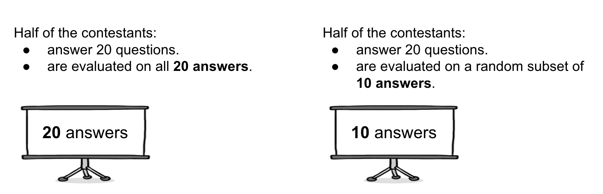
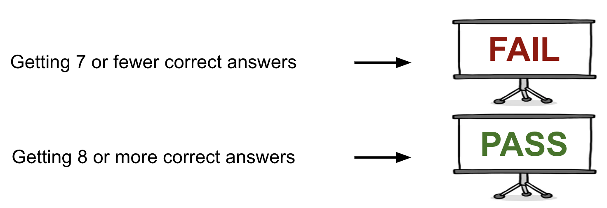
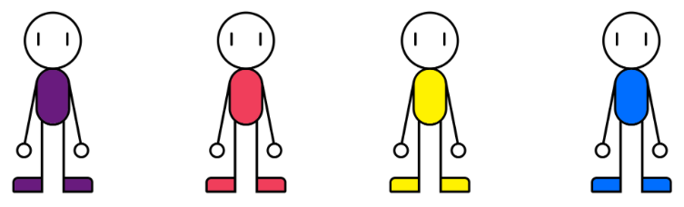
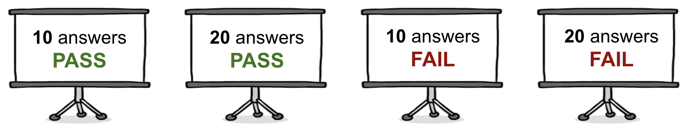
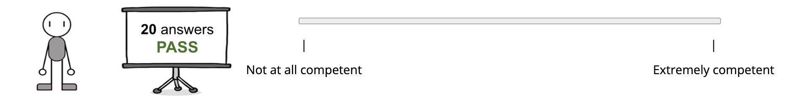
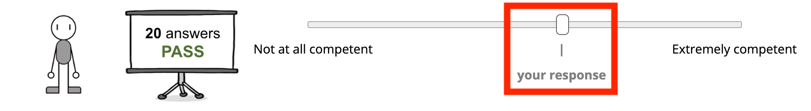
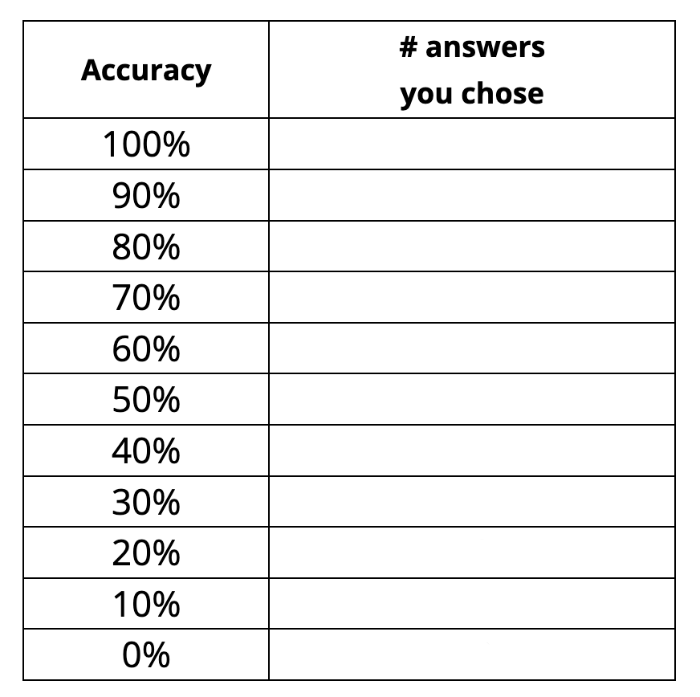
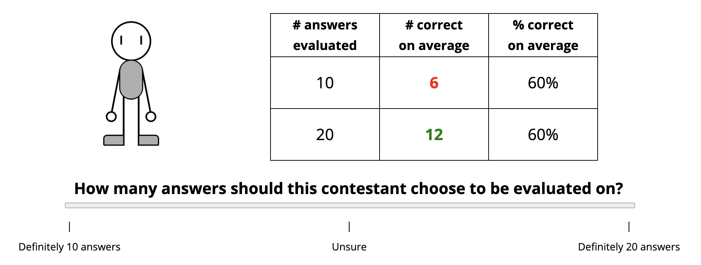

<!DOCTYPE html>
<html>
  <head>
    <title> Hidden Genius </title>
    <script src="jspsych/dist/jspsych.js"></script>
    <script src="jspsych/dist/plugin-browser-check.js"></script>
    <script src="jspsych/dist/plugin-fullscreen.js"></script>
    <script src="jspsych/dist/plugin-survey.js"></script>
    <script src="jspsych/dist/plugin-survey-multi-choice.js"></script>
    <script src="jspsych/dist/plugin-instructions.js"></script>
    <script src="jspsych/dist/plugin-call-function.js"></script>
    <script src="jspsych/dist/plugin-html-keyboard-response.js"></script>
    <script src="jspsych/dist/plugin-html-button-response.js"></script>
    <script src="jspsych/dist/plugin-html-slider-response.js"></script>
    <script src="jspsych/dist/plugin-preload.js"></script>
    <script src="https://code.jquery.com/jquery-3.7.1.slim.min.js"></script>
    <link href="jspsych/dist/jspsych.css" rel="stylesheet" type="text/css" />
    <link rel="stylesheet" href="https://unpkg.com/@jspsych/plugin-survey@0.2.2/css/survey.css">
    <style>
        .row { display: flex; width: 100%; }
        .column { flex: 50%; }
        table, th, td { border: 1px solid black; border-collapse: collapse; }
        .hidden_slider_thumb1 input#jspsych-html-slider-response-response1.jspsych-slider::-webkit-slider-thumb { opacity: 0; }
        .hidden_slider_thumb1 input#jspsych-html-slider-response-response1.jspsych-slider::-moz-range-thumb { opacity: 0; }

        .hidden_slider_thumb2 input#jspsych-html-slider-response-response2.jspsych-slider::-webkit-slider-thumb { opacity: 0; }
        .hidden_slider_thumb2 input#jspsych-html-slider-response-response2.jspsych-slider::-moz-range-thumb { opacity: 0; }

        .hidden_slider_thumb3 input#jspsych-html-slider-response-response3.jspsych-slider::-webkit-slider-thumb { opacity: 0; }
        .hidden_slider_thumb3 input#jspsych-html-slider-response-response3.jspsych-slider::-moz-range-thumb { opacity: 0; }

        .hidden_slider_thumb4 input#jspsych-html-slider-response-response4.jspsych-slider::-webkit-slider-thumb { opacity: 0; }
        .hidden_slider_thumb4 input#jspsych-html-slider-response-response4.jspsych-slider::-moz-range-thumb { opacity: 0; }
    </style>
  </head>
  <body></body>
  <script>

    const jsPsych = initJsPsych();

    var timeline = [];

    // setup
    var observer_contestant_images = ['img/contestantA.png', 'img/contestantB.png', 'img/contestantC.png', 'img/contestantD.png'];
    var actor_contestant_images = [];
    for (var i = 1; i <= 11; i++) {
        actor_contestant_images.push('img/contestant' + i + '.png')
    }
    var result_images = ['img/10pass.png', 'img/20pass.png', 'img/10fail.png', 'img/20fail.png'];

    var table_content = [];
    for (var i = 0; i <= 10; i++) {
        var color_10 = i >= 8 ? 'green' : 'red';
        var color_20 = i >= 4 ? 'green' : 'red'
        table_content.push([i, color_10, 2*i, color_20, i*10])
    }
    table_content = jsPsych.randomization.repeat(table_content, 1);

    var subjectId =  jsPsych.randomization.randomID(12);
    var fullurl = window.location.href;
    var mturkId = jsPsych.data.getURLVariable('workerId');
    var expIndex = 'exp2';
    var comp_code = 'SAce29r8cjd';
    jsPsych.data.addProperties({
        subjectId: subjectId,
        url: fullurl,
        mturkId: mturkId,
        expIndex: expIndex
    });


    function play_actor(contestant_idx) {
        var trial = {
            type: jsPsychHtmlSliderResponse,
            stimulus: `<p style='font-size: 22px'> <b>Contestant ${contestant_idx}</b>`,
            prompt1: function() {
                var pass10_competence = jsPsych.data.get().filter({block: 'naive_observer'}).select('naive_competence_10pass').values;
                var pass20_competence = jsPsych.data.get().filter({block: 'naive_observer'}).select('naive_competence_20pass').values;
                var fail10_competence = jsPsych.data.get().filter({block: 'naive_observer'}).select('naive_competence_10fail').values;
                var fail20_competence = jsPsych.data.get().filter({block: 'naive_observer'}).select('naive_competence_20fail').values;
                return `<p> Below is this contestant's overall performance in a number of practice tests: </p><br>            
            <div class="row">
            <div class="column" style="float: left;"></img></div>
            <div class="column" style="float: right; display: flex;"> 
            <table>
                <thead>
                    <tr>
                        <th scope="col"><div class="hideextra" style="width:150px"># answers <br>evaluated</div></th>
                        <th scope="col"><div class="hideextra" style="width:150px"># correct <br>on average</div></th>
                        <th scope="col"><div class="hideextra" style="width:150px">% correct <br>on average</div></th>
                    </tr>
                </thead>
                <tbody>
                    <tr>
                        <td><div style='font-size: 22px'>10</div></td>
                        <td><div style='font-size: 22px; color: ${table_content[contestant_idx-1][1]};'><b>${table_content[contestant_idx-1][0]}</b></div></td>
                        <td><div style='font-size: 22px'>${table_content[contestant_idx-1][4]}%</div></td>
                    </tr>
                    <tr>
                        <td><div style='font-size: 22px'>20</div></td>
                        <td><div style='font-size: 22px; color: ${table_content[contestant_idx-1][3]};'><b>${table_content[contestant_idx-1][2]}</b></div></td>
                        <td><div style='font-size: 22px'>${table_content[contestant_idx-1][4]}%</div></td>
                    </tr>
                </tbody>
            </table>
            </div>
            <div class="column" style="float: right;"></img></div>
            </div>
            <br><br><p style='font-size: 22px'> <b>How many answers should this contestant choose to be evaluated on?</b> <p>
            <div style='text-align: center; display: flex; flex-wrap: wrap; width: 850px'>
            <p> Remember that the contestant's only goal is to get at least 8 correct answers among the answers evaluated.
            <br> <span style='font-size: 16px'> (Click on the slider bar to make the slider button appear.) </span></p>
            </div>`
        },
            css_classes: ['hidden_slider_thumb1'],
            on_load: function() {
                let slider1 = $('input#jspsych-html-slider-response-response1.jspsych-slider');
                slider1.on('mousedown', function(e) {
                    slider1.off('mousedown');
                    $('.hidden_slider_thumb1').removeClass('hidden_slider_thumb1'); // show slider thumb once slider is clicked
                });
            },
            labels: ['| <br> Definitely 10 answers', '| <br> Unsure', '| <br> Definitely 20 answers'],
            slider_width: 800,
            min: 0,
            max: 100,
            step: 1,
            slider_start1: 50,
            require_movement: true,
            button_label: 'Next',
            data: {block: 'actor', accuracy: table_content[contestant_idx-1][0]/10},
            save_trial_parameters: { slider_start1: false },
            on_finish: function(data) {
                data.probability_20 = data.response1;
                data.probability_10 = 100 - data.response1;
            }
        };
        return trial
    }

    var play_naive_observer = {
        type: jsPsychHtmlSliderResponse,
        stimulus: `<p style='font-size: 22px'> <b>How competent is each contestant?</b> </p>
        <span 'font-size: 18px'> Remember that the <b>contestants's only goal is to <span style='color: green'>PASS</span></b>, which requires getting at least 8 correct answers. </span>
        <br> <span style='font-size: 16px'> (Click on the slider bar to make the slider button appear.) </span></p><br>`,
        prompt1: `<div class="row">
        <div class="column" style="float: left;">
        </img>
        <br> Contestant A </div>
        <div class="column" style="float: left;"></img></div>
        <div class="column" style="float: left;"></img></div>`,
        prompt2: `<div class="row">
        <div class="column" style="float: left;">
        </img>
        <br> Contestant B </div>
        <div class="column" style="float: left;"></img></div>
        <div class="column" style="float: left;"></img></div>`,
        prompt3: `
        <div class="row">
        <div class="column" style="float: left;">
        </img>
        <br> Contestant C </div>
        <div class="column" style="float: left;"></img></div>
        <div class="column" style="float: left;"></img></div>`,
        prompt4: `<div class="row">
        <div class="column" style="float: left;">
        </img>
        <br> Contestant D </div>
        <div class="column" style="float: left;"></img></div>
        <div class="column" style="float: left;"></img></div>`,
        css_classes: ['hidden_slider_thumb1', 'hidden_slider_thumb2', 'hidden_slider_thumb3', 'hidden_slider_thumb4'],
        on_load: function() {
            let slider1 = $('input#jspsych-html-slider-response-response1.jspsych-slider');
            slider1.on('mousedown', function(e) {
                slider1.off('mousedown');
                $('.hidden_slider_thumb1').removeClass('hidden_slider_thumb1'); // show slider thumb once slider is clicked
            });

            let slider2 = $('input#jspsych-html-slider-response-response2.jspsych-slider');
            slider2.on('mousedown', function(e) {
                slider2.off('mousedown');
                $('.hidden_slider_thumb2').removeClass('hidden_slider_thumb2');
            });

            let slider3 = $('input#jspsych-html-slider-response-response3.jspsych-slider');
            slider3.on('mousedown', function(e) {
                slider3.off('mousedown');
                $('.hidden_slider_thumb3').removeClass('hidden_slider_thumb3');
            });

            let slider4 = $('input#jspsych-html-slider-response-response4.jspsych-slider');
            slider4.on('mousedown', function(e) {
                slider4.off('mousedown');
                $('.hidden_slider_thumb4').removeClass('hidden_slider_thumb4');
            });
        },
        labels: ['| <br> Not at all competent', '| <br> Extremely competent'],
        slider_width: 500,
        min: 0,
        max: 100,
        step: 1,
        slider_start1: 50,
        require_movement: true,
        button_label: 'Next',
        data: {block: 'naive_observer'},
        save_trial_parameters: { slider_start1: false },
        on_finish: function(data) {
            data.naive_competence_10pass = data.response1;
            data.naive_competence_20pass = data.response2;
            data.naive_competence_10fail = data.response3;
            data.naive_competence_20fail = data.response4;
        }
    };

    var reflect_on_answers = {
        type: jsPsychSurveyMultiChoice,
        preamble: `<div style='text-align: left; display: flex; flex-wrap: wrap; width: 850px'> 
        <p>Here is a summary table of <b>your responses in the previous section</b>. Each row shows the number of answers you thought a contestant should choose to be evaluated on when they had a specific level of competence (accuracy). For responses that were between 45%-55% certain, we show you 'unsure' instead. Based on your responses, you think that:</p>
        </div>`,
        show_figure: true,
        figure: function() {
                var stim = `</img>
                <table>
                    <thead>
                        <tr>
                            <th scope="col"><div class="hideextra" style="width:120px">Accuracy</div></th>
                            <th scope="col"><div class="hideextra" style="width:120px"># answers <br> you chose</div></th>
                        </tr>
                    </thead>
                    <tbody>`
                    for (let i = 0; i < table_content.length; i++) {
                        var prob = jsPsych.data.get().filter({block: 'actor', accuracy: (10-i)/10}).select('probability_20').values;
                        if (prob < 45) {
                            stim += `<tr>
                            <td><div style='font-size: 22px'> ${(10-i)*10}% </div></td>
                            <td><div style='font-size: 22px'><b> 10 </b></div></td>
                            </tr>`
                        } else if (prob > 55) {
                            stim += `<tr>
                            <td><div style='font-size: 22px'> ${(10-i)*10}% </div></td>
                            <td><div style='font-size: 22px'><b> 20 </b></div></td>
                            </tr>`
                        } else {
                            stim += `<tr>
                            <td><div style='font-size: 22px'> ${(10-i)*10}% </div></td>
                            <td><div style='font-size: 22px'><b> unsure </b></div></td>
                            </tr>`
                        }
                    }
                    stim += `</tbody>
                </table>`
                return stim
        },
        questions: [
            {
                prompt: '<b> 1. What should a more competent contestant choose? </b>',
                options: ['10 answers.',
                          '20 answers.'], 
                required: true
            },
            {
                prompt: '<b> 2. What should an average-skilled contestant choose? </b>',
                options: ['10 answers.',
                          '20 answers.'],  
                required: true
            },
            {
                prompt: '<b> 3. What should a less competent contestant choose? </b>',
                options: ['10 answers.',
                          '20 answers.'], 
                required: true
            }
        ],
        on_finish: function(data) {
            var responses = data.response
            if (responses.Q0.includes('10') == true) {
                data.more_competent_choice = '10'
            } else {
                data.more_competent_choice = '20'
            }
            if (responses.Q1.includes('10') == true) {
                data.average_competent_choice = '10'
            } else {
                data.average_competent_choice = '20'
            }
            if (responses.Q2.includes('10') == true) {
                data.less_competent_choice = '10'
            } else {
                data.less_competent_choice = '20'
            }
        }
    };

    var play_sophisticated_observer = {
        type: jsPsychHtmlSliderResponse,
        stimulus: function() {
            var stim = `<p style='font-size: 22px'> <b>How competent is each contestant?</b> </p>
        <span 'font-size: 18px'> Remember that the <b>contestants's only goal is to <span style='color: green'>PASS</span></b>, which requires getting at least 8 correct answers. </span>
        <br> <span 'font-size: 18px'>Below are your earlier responses. 
        <br> Drag the slider thumb if you want to make changes. 
        Click the slider thumb to keep your original response. </span>
        <br></img></div>
        <div class="row">
        <div class="column" style="float: left;">
            <table>
                <thead>
                    <tr>
                        <th scope="col"><div class="hideextra" style="width:150px">Accuracy</div></th>
                        <th scope="col"><div class="hideextra" style="width:250px"># answers <br> you chose</div></th>
                    </tr>
                </thead>
                <tbody>`
                for (let i = 0; i < table_content.length; i++) {
                    var prob = jsPsych.data.get().filter({block: 'actor', accuracy: (10-i)/10}).select('probability_20').values;
                    if (prob < 45) {
                        stim += `<tr>
                        <td><div style='font-size: 22px'> ${(10-i)*10}% </div></td>
                        <td><div style='font-size: 22px'><b> 10 </b></div></td>
                        </tr>`
                    } else if (prob > 55) {
                        stim += `<tr>
                        <td><div style='font-size: 22px'> ${(10-i)*10}% </div></td>
                        <td><div style='font-size: 22px'><b> 20 </b></div></td>
                        </tr>`
                    } else {
                        stim += `<tr>
                        <td><div style='font-size: 22px'> ${(10-i)*10}% </div></td>
                        <td><div style='font-size: 22px'><b> unsure </b></div></td>
                        </tr>`
                    }
                }
                stim += `</tbody>
            </table></div>
            <div class="column" style="float: left;">
            </img>`
            return stim
        },
        prompt1: `<div class="column" style="float: right;">
        <div class="row">
        <div class="column" style="float: left;">
        </img>
        <br> Contestant A </div>
        <div class="column" style="float: left;"></img></div>
        <div class="column" style="float: left;"></img></div>`,
        prompt2: `<div class="row">
        <div class="column" style="float: left;">
        </img>
        <br> Contestant B </div>
        <div class="column" style="float: left;"></img></div>
        <div class="column" style="float: left;"></img></div>`,
        prompt3: `<div class="row">
        <div class="column" style="float: left;">
        </img>
        <br> Contestant C </div>
        <div class="column" style="float: left;"></img></div>
        <div class="column" style="float: left;"></img></div>`,
        prompt4: `<div class="row">
        <div class="column" style="float: left;">
        </img>
        <br> Contestant D </div>
        <div class="column" style="float: left;"></img></div>
        <div class="column" style="float: left;"></img></div>`,
        labels: ['Not at all competent', 'Extremely competent'],
        slider_width: 500,
        min: 0,
        max: 100,
        step: 1,
        original_response1: function() {
            return jsPsych.data.get().filter({block: 'naive_observer'}).select('naive_competence_10pass').values[0];
        },
        original_response2: function() {
            return jsPsych.data.get().filter({block: 'naive_observer'}).select('naive_competence_20pass').values[0];
        },
        original_response3: function() {
            return jsPsych.data.get().filter({block: 'naive_observer'}).select('naive_competence_10fail').values[0];
        },
        original_response4: function() {
            return jsPsych.data.get().filter({block: 'naive_observer'}).select('naive_competence_20fail').values[0];
        },
        slider_start1: function() {
            return jsPsych.data.get().filter({block: 'naive_observer'}).select('naive_competence_10pass').values[0];
        },
        slider_start2: function() {
            return jsPsych.data.get().filter({block: 'naive_observer'}).select('naive_competence_20pass').values[0];
        },
        slider_start3: function() {
            return jsPsych.data.get().filter({block: 'naive_observer'}).select('naive_competence_10fail').values[0];
        },
        slider_start4: function() {
            return jsPsych.data.get().filter({block: 'naive_observer'}).select('naive_competence_20fail').values[0];
        },
        require_movement: true,
        button_label: 'Next',
        data: {block: 'sophisticated_observer'},
        on_finish: function(data) {
            data.sophisticated_competence_10pass = data.response1;
            data.sophisticated_competence_20pass = data.response2;
            data.sophisticated_competence_10fail = data.response3;
            data.sophisticated_competence_20fail = data.response4;
        }
    };

    var full_screen = {
        type: jsPsychFullscreen,
        fullscreen_mode: true,
        message: `<p>To avoid distraction, this game must be completed in <b>full screen</b> mode by clicking the button below.</p>
                  <p>Please <b>do not exit full-screen mode until the end</b> of the game.</p><br>`,
        button_label: "Enter full screen"
    };

    var gap = {
        type: jsPsychHtmlKeyboardResponse,
        stimulus: ' ',
        choices: 'NO_KEYS',
        trial_duration: 1000
    };

    // main 
    var instructions = {
        type: jsPsychInstructions,
        pages: [
            `<div style='text-align: left; display: flex; flex-wrap: wrap; width: 850px'>
            <p> Welcome to 'Hidden Genius'! </p>
            <p>In this thrilling game of wits and chance, our <b>contestants will each receive 20 general knowledge questions</b> to answer. 
            But here's the twist: <b>for a randomly selected half of our contestants, only 10 of their answers, chosen at random from their full set of 20, will count towards their score.</b>
            The contestants cannot decide which group they fall into. </p> 
            </div>
            </img>`,
            `<div style='text-align: left; display: flex; flex-wrap: wrap; width: 850px'>
            <p> To pass the test, contestants must <b>get at least 8 correct answers</b>. This threshold applies whether they're evaluated on all 20 of their answers or just the randomly selected 10, depending on their assigned group. 
            Once they've submitted their answers electronically, 
            our high-tech system will filter out the 10 or 20 answers for evaluation, and reveal whether they <b><i style='color: green'>passed</i></b> or <b><i style='color: red'>failed</i></b>. That is, whether the 10 or 20 answers contained at least 8 correct answers.
            <b>Contestant who passed the test will move on to the next round of the show.</b> </p>
            </div> 
            </img>`,
            `<div style='text-align: left; display: flex; flex-wrap: wrap; width: 850px'> 
            <p> Because they need to pass the test in order to move on, the <b>contestants' only goal is to get at least 8 correct answers.</b> </p>
            <p> Will our contestants rise to the challenge, or will the pressure of the unknown get to them? 
            Let's find out as we begin tonight's battle of brains on 'Hidden Genius'! </p>
            <p> Click 'Next' to check your understanding about the game show. </p>
            </div>`
        ],
        show_clickable_nav: true
    };

    var failed_comprehension_questions = true;
    let comprehension_questions = {
        type: jsPsychSurveyMultiChoice,
        preamble: `Comprehension questions:`,
        questions: [
            {
                prompt: '<b> 1. How many questions are given to the contestants? </b>',
                options: ['10 or 20, randomly assigned to each contestant.',
                          '20 questions for all contestants.',
                          'A random number of questions, no more than 20 and no less than 10.'], 
                required: true
            },
            {
                prompt: '<b> 2. How many of each contestant\'s answers will be evaluated? </b>',
                options: ['10 or 20, randomly determined.',
                          '20 answers for all contestants.',
                          'A random number of answers, no more than 20 and no less than 10.'], 
                required: true
            },
            {
                prompt: '<b> 3. How many correct answers do the contestants need in order to pass the test? </b>',
                options: ['All of the answers need to be correct among the answers that are evaluated.',
                          'Exactly 8 correct answers among the answers that are evaluated.',
                          'At least 8 correct answers among the answers that are evaluated.'], 
                required: true
            },
            {
                prompt: '<b> 4. Who will move on to the next round of the game show? </b>',
                options: ['The first contestant that passed.',
                          'All contestants that passed the test.',
                          'Contestants that are more competent.'], 
                required: true
            }
        ],
        on_finish: function(data) {
            var responses = data.response
            console.log(responses.Q2)
            if (responses.Q0.includes('all') == true && responses.Q1.includes('randomly') == true && responses.Q2.includes('least') == true && responses.Q3.includes('the test') == true) {
                failed_comprehension_questions = false
            }
        }
    };

    var fail_page = {
          type: jsPsychHtmlButtonResponse,
          stimulus: "<p> Oops! You did not pass the comprehension check. </p>",
          choices: ['<p style="font-size: 20px"><b> View instructions again </b></p>']
    };

    var fail = {
        timeline: [fail_page],
        conditional_function: function() {
            return failed_comprehension_questions
        }
    };

    var inst_comprehension = {
        timeline: [instructions, gap, comprehension_questions, fail],
        loop_function: function(){
            return failed_comprehension_questions
        }
    };

    // naive observer block
    var instructions_observer_0 = {
        type: jsPsychInstructions,
        pages: [
           `<div style='text-align: left; display: flex; flex-wrap: wrap; width: 850px'> 
           <p> We will show you four different contestants and ask you to <b>evaluate their competence</b>.</p>
           </div>
           
           <div style='text-align: left; display: flex; flex-wrap: wrap; width: 850px'> 
           <p> For each contestant, we will tell you <u>how many of their answers were evaluated</u>, and <u>whether they <b><i style='color: green'>passed</i></b> or <b><i style='color: red'>failed</i></b></u>, like this: </p>
           </div>
           </img>`,
           `<div style='text-align: left; display: flex; flex-wrap: wrap; width: 850px'> 
           <p> You will then <u>report your competence evaluations on a slider</u>. 
           Here is an example of a contestant who was evaluated on 20 answers and passed: </p>
           </div>
           <p style='text-align: center'> <b>How competent is this contestant?</b> </p>
           
           <p> Click 'Next' to check your understanding. </p>`
        ],
        show_clickable_nav: true
    };

    var failed_comprehension_questions_observer_0 = true;
    let comprehension_questions_observer_0 = {
        type: jsPsychSurveyMultiChoice,
        preamble: `Comprehension questions:`,
        questions: [
            {
                prompt: '<b> 1. What is your task? </b>',
                options: ['To evaluate four contestants\' appearance.',
                          'To evaluate four contestants\' competence.',
                          'To decide which of the four contestants will move on to the next round.'], 
                required: true
            },
            {
                prompt: '<b> 2. What determines the number of answers each contestant is evaluated on? </b>',
                options: ['Their performance history.',
                          'Contestants themselves choose how many answers are evaluated.',
                          'It\'s completely random.'],
                required: true
            }
        ],
        on_finish: function(data) {
            var responses = data.response
            if (responses.Q0.includes('competence') == true && responses.Q1.includes('random') == true) {
                failed_comprehension_questions_observer_0 = false
            }
        }
    };

    var fail_page_observer_0 = {
          type: jsPsychHtmlButtonResponse,
          stimulus: "<p> Oops! You did not pass the comprehension check. </p>",
          choices: ['<p style="font-size: 20px"><b> View instructions again </b></p>']
    };

    var fail_observer_0 = {
        timeline: [fail_page_observer_0],
        conditional_function: function() {
            return failed_comprehension_questions_observer_0
        }
    };

    var inst_comprehension_observer_0 = {
        timeline: [instructions_observer_0, gap, comprehension_questions_observer_0, fail_observer_0],
        loop_function: function(){
            return failed_comprehension_questions_observer_0
        }
    };

    // sophisticated observer block
    var instructions_observer_1 = {
        type: jsPsychInstructions,
        pages: [
           `<div style='text-align: left; display: flex; flex-wrap: wrap; width: 850px'> 
           <p> Now, we will show you the four contestants you evaluated earlier and ask you to <b>evaluate their competence again</b>, this time with your inside scoop. </p>
           <p> Knowing that they can choose the number of answers that are evaluated, how competent do you think they each are? </p>
           </div>
           `,
           `<div style='text-align: left; display: flex; flex-wrap: wrap; width: 850px'> 
           <p> As before, you will observe <u>how many answers they were evaluated on</u>, and <u>whether they <b><i style='color: green'>passed</i></b> or <b><i style='color: red'>failed</i></b></u>, then <u>report your competence evaluations on a slider</u>. 
           <br><b>In addition, you will see the competence evaluations you reported earlier for each contestant. </b> This is before you knew that the contestants themselves can choose how many answers are evaluated.             
           <br>Here is an example: </p>
           </div>
           <p style='text-align: center'> <b>How competent is this contestant?</b> </p>
           
           <div style='text-align: left; display: flex; flex-wrap: wrap; width: 850px'><br> If you want to update your evaluations, drag the slider thumb to report your new evaluation. If you want to keep your original response, simply click the slider thumb.
           </div>`,
           `<div style='text-align: left; display: flex; flex-wrap: wrap; width: 850px'> 
           <p> Finally, to remind you what the contestants might think, <b>we will show you a summary table of your responses in the previous section</b>. Each row shows the number of answers you thought a contestant should choose to be evaluated on when they had a specific level of competence (accuracy). For responses that were between 45%-55% certain, we will show you 'unsure' instead. </p>
           </div>
           </img>
           <div style='text-align: left; display: flex; flex-wrap: wrap; width: 850px'> 
           Click 'Next' to check your understanding.
           </div>`
        ],
        show_clickable_nav: true
    };

    var failed_comprehension_questions_observer_1 = true;
    let comprehension_questions_observer_1 = {
        type: jsPsychSurveyMultiChoice,
        preamble: `Comprehension questions:`,
        questions: [
            {
                prompt: '<b> 1. What is your task? </b>',
                options: ['To evaluate four contestants\' appearance.',
                          'To evaluate four contestants\' competence.',
                          'To decide which of the four contestants will move on to the next round.'], 
                required: true
            },
            {
                prompt: '<b> 2. What do you now know that you previously didn\'t? </b>',
                options: ['The contestants\' exact scores.',
                          'The contestants\' performance in practice tests.',
                          'The fact that contestants can choose how many answers they are evaluated on.'], 
                required: true
            },
            {
                prompt: '<b> 3. What is the contestants\' goal? </b>',
                options: ['To complete the questions as fast as they can.',
                          'To pass the test (get at least 8 correct answers).',
                          'To show off how competent they are.'], 
                required: true
            },
            {
                prompt: '<b> 4. What does the "your response" indicator on the slider mean? </b>',
                options: ['The evaluation I should report.',
                          'A reminder of my evaluation for the contestant before I knew that they could choose how many answers are evaluated.',
                          'It is unclear what that means.'], 
                required: true
            }
        ],
        on_finish: function(data) {
            var responses = data.response
            if (responses.Q0.includes('competence') == true && responses.Q1.includes('choose') == true && responses.Q2.includes('pass') == true && responses.Q3.includes('choose') == true) {
                failed_comprehension_questions_observer_1 = false
            }
        }
    };

    var fail_page_observer_1 = {
          type: jsPsychHtmlButtonResponse,
          stimulus: "<p> Oops! You did not pass the comprehension check. </p>",
          choices: ['<p style="font-size: 20px"><b> View instructions again </b></p>']
    };

    var fail_observer_1 = {
        timeline: [fail_page_observer_1],
        conditional_function: function() {
            return failed_comprehension_questions_observer_1
        }
    };

    var inst_comprehension_observer_1 = {
        timeline: [instructions_observer_1, gap, comprehension_questions_observer_1, fail_observer_1],
        loop_function: function(){
            return failed_comprehension_questions_observer_1
        }
    };

    // actor block
    var instructions_actor = {
        type: jsPsychInstructions,
        pages: [
           `<div style='text-align: left; display: flex; flex-wrap: wrap; width: 850px'> 
           <p> It turns out that <b>the contestants can actually choose how many answers they are evaluated on.</b> </p>
           <p> Therefore, besides trying their best to answer the questions, the contestants also need to decide how many answers would help them pass. </p>
           </div>`,
           `<div style='text-align: left; display: flex; flex-wrap: wrap; width: 850px'> 
           <p> We will show you a few contestants and their average performance in a number of practice tests, and ask you whether you think they should choose to be evaluated on 10 answers or 20 answers.
           <p> You will observe their performance in practice tests, which tells you <u>how many correct answers they get on average when 10 or 20 answers were evaluated</u>, and <u>whether that score would mean <b><i style='color: green'>PASS</i></b> or <b><i style='color: red'>FAIL</i></b></u>. You will then report your response on a slider. </p>
           <p> Here is an example: </p>
           </div>
           `,
           `<div style='text-align: left; display: flex; flex-wrap: wrap; width: 850px'> 
           <p> <b>Remember that the contestants' only goal is to pass the test</b>, which requires at least 8 correct answers. Is it more likely for them to pass if 10 or 20 of their answers counted? </p>
           <p> Click 'Next' to check your understanding. </p>
           </div>`
        ],
        show_clickable_nav: true
    };

    var failed_comprehension_questions_actor = true;
    let comprehension_questions_actor = {
        type: jsPsychSurveyMultiChoice,
        preamble: `Comprehension questions:`,
        questions: [
            {
                prompt: '<b> 1. What is your task? </b>',
                options: ['To evaluate four contestants\' appearance.',
                          'To evaluate the contestants\' competence.',
                          'To help the contestants decide how many answers to be evaluated on (10 or 20).'], 
                required: true
            },
            {
                prompt: '<b> 2. What determines the number of answers each contestant is evaluated on? </b>',
                options: ['Their performance history.',
                          'Contestants themselves choose how many answers are evaluated.',
                          'It\'s completely random.'],
                required: true
            },
            {
                prompt: '<b> 3. What is the contestants\' goal? </b>',
                options: ['To complete the questions as fast as they can.',
                          'To pass the test (get at least 8 correct answers).',
                          'To show off how competent they are.'], 
                required: true
            }
        ],
        on_finish: function(data) {
            var responses = data.response
            if (responses.Q0.includes('help') == true && responses.Q1.includes('choose') == true && responses.Q2.includes('pass') == true) {
                failed_comprehension_questions_actor = false
            }
        }
    };

    var fail_page_actor = {
          type: jsPsychHtmlButtonResponse,
          stimulus: "<p> Oops! You did not pass the comprehension check. </p>",
          choices: ['<p style="font-size: 20px"><b> View instructions again </b></p>']
    };

    var fail_actor = {
        timeline: [fail_page_actor],
        conditional_function: function() {
            return failed_comprehension_questions_actor
        }
    };

    var inst_comprehension_actor = {
        timeline: [instructions_actor, gap, comprehension_questions_actor, fail_actor],
        loop_function: function(){
            return failed_comprehension_questions_actor
        }
    };

    var preload = {
        type: jsPsychPreload,
        images: [observer_contestant_images, actor_contestant_images, result_images, 'img/white.png', 'img/pass_fail.png', 'img/all_results.png', 'img/four_contestants.png', 'img/observer_slider.png', 'img/actor_slider.png', 'img/sophisticated_observer_slider.png', 'img/actor_block_summary.png', 'img/1020answers.png']
    };

    var check_browser = {
        type: jsPsychBrowserCheck,
        minimum_width: 600,
        minimum_height: 400,
        inclusion_function: function(data) {return (!data.mobile);},
        exclusion_message:  function(data) {return (data.mobile)? "You must complete this experiment on a computer." : "You cannot participate in this experiment.";}
    }
    
    var demographics = {
        type: jsPsychSurvey,
        pages: [[
            {type:'html', prompt:'We need some more information from you. This will not be associated with your MTurk profile, nor will it impact you in any way.'},
            {
                type: 'drop-down',
                prompt: 'Gender',
                name: 'gender',
                required: true,
                options: ['Female', 'Male', 'Non-binary', 'Other'],
            },
            {
                type: 'text',
                prompt: 'Age',
                name: 'age',
                input_type: 'number',
                required: true,
                textbox_columns: 3
            },
            {
                type: 'text',
                prompt: 'Please summarize the task you just completed in 1-2 sentences, so that we know you have been paying attention!',
                name: 'summary',
                required: true,
                textbox_rows: 3,
            },
            {
                type: 'text',
                prompt: 'Optional question: We\'re always trying to improve. Please let us know if you have any comments.',
                name: 'comment',
                required: false,
                textbox_rows: 3,
            }
        ]],
        show_question_numbers: 'on',
        on_finish: function(data) {
            data.gender = data.response.gender;
            data.age = data.response.age;
            data.summary = data.response.summary;
            data.comment = data.response.comment;
                var interaction_data = jsPsych.data.getInteractionData();
                data.screen = interaction_data.json();
        },
        save_trial_parameters: {accuracy: false}
    }


    // start exp
    timeline.push(preload);
    timeline.push(check_browser);
    timeline.push(full_screen);
    timeline.push(inst_comprehension);
    timeline.push(inst_comprehension_observer_0)
    timeline.push(play_naive_observer)
    timeline.push(gap);
    timeline.push(inst_comprehension_actor)
    for (var t = 1; t <= 11; t++) {
        timeline.push(play_actor(t))
    }
    timeline.push(gap);
    timeline.push(inst_comprehension_observer_1)
    timeline.push(reflect_on_answers)
    timeline.push(play_sophisticated_observer)
    timeline.push(demographics)

    // save data
    function saveData(name, data) {
        var xhr = new XMLHttpRequest();
          xhr.open('POST', 'save_data.php');
          xhr.setRequestHeader('Content-Type', 'application/json');
          xhr.send(JSON.stringify({filename: name, filedata: data}));    
    } 

    let save_data = {
        type: jsPsychCallFunction,
        func: function(){ saveData(expIndex + '_' + mturkId + '_' + subjectId + '_output', jsPsych.data.get().csv()); }
    }
    timeline.push(save_data);

    let completion = {
        type: jsPsychHtmlKeyboardResponse,
        stimulus: `<p> Your response has been recorded!</p>
        <p> Your completion code is</p> ${comp_code}
        <p> Please copy this code into Mechanical Turk. You will not be be able to access this code after leaving this page!</p>
        <p> No further action is necessary; you may now exit the window at any time.</p>`,
        choices: 'NO_KEYS',
    }
    timeline.push(completion);

    jsPsych.run(timeline);

  </script>
</html>


